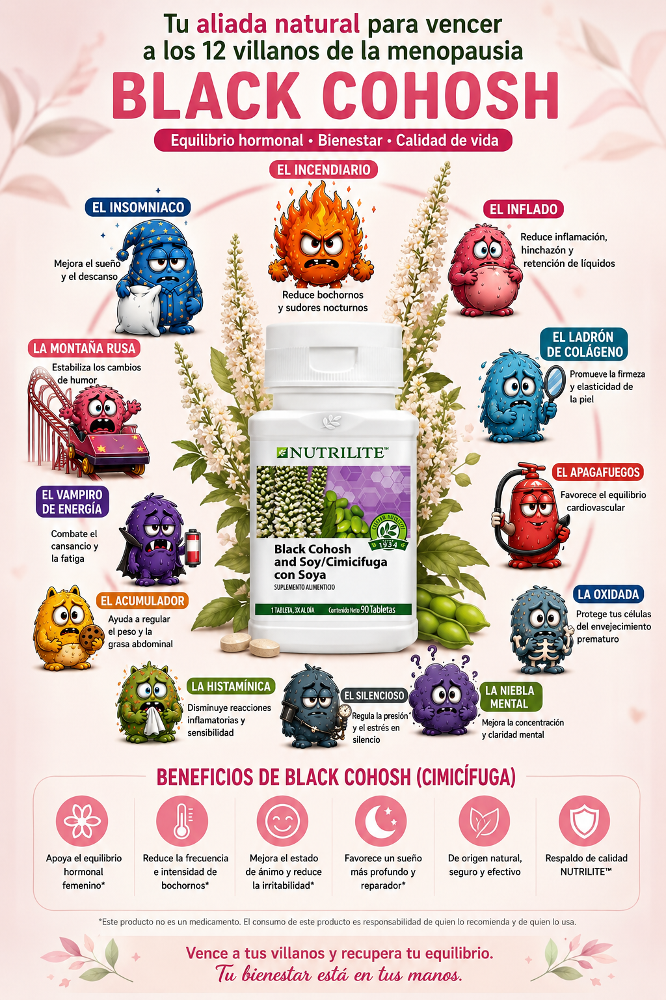

⭐
Mi Ruta de Activación
DESCUBRE → CONECTA → ACOMPAÑA → COMPARTE → ACTÍVATE → MULTIPLICA.
DESCUBRE → CONECTA → ACOMPAÑA → COMPARTE → ACTÍVATE → MULTIPLICA.
Reconozco mi historia. Pongo palabras a lo vivido y aprendo a escuchar.
Convierte lo que acabas de reflexionar en una presentación breve, auténtica y fácil de contar.
Acompaña a 3 mujeres: escucha, orienta y conecta, sin diagnosticar ni prescribir.
Aquí empieza el movimiento. Antes de tener una sesión, necesitas aprender a invitar. No se trata de convencer: se trata de abrir una conversación y hacer que la otra mujer sienta que pensaste en ella.
Una buena sesión comienza mucho antes de sentarse alrededor de una mesa. Comienza cuando haces una invitación personal, clara y cercana.
Haz una lista de mujeres en las que genuinamente pensaste y envía tus invitaciones de manera personal. Después registra el número real abajo, hayan asistido o no.
No se trata de memorizar un discurso. Se trata de tener claro qué quieres contar para que suene natural.
Hazlo tuyo: usa palabras que realmente dirías, evita explicar todo y no intentes vender en estos 60 segundos. Primero conecta.

Son una forma sencilla de poner nombre a lo que se siente. No son diagnósticos.
Recibe → escucha → identifica → orienta → da seguimiento.
Tu primera sesión no necesita ser perfecta. Necesita ser clara, cercana y llevar a cada mujer de la identificación a un siguiente paso.
Define lugar, horario y duración. Ten listos el Test de Villanos, el Mapa o Cuadernillo, el material de Alianzas, el QR de evaluación y los recursos que vas a utilizar.
En el Mapa de Villanos, cada mujer puede marcar qué tan intensamente siente cada Villano y observar visualmente cuáles necesitan mayor atención.
Escucha, pregunta, ayuda a reconocer patrones y conecta con herramientas educativas. No diagnostiques, prescribas ni prometas resultados. Si aparecen señales que requieren valoración profesional, orienta a buscar atención médica.
Registra quién asistió, quién pidió apoyo, quién quiere continuar con el reto o seguimiento, quién necesita una sesión individual y quién muestra interés en conocer el camino de Embajadora.